《追色手记06》学习资料
YangJihoon摄影风格调色：视频拆解与 Lightroom 实操复盘
视频标题 | 【追色手记06】教程来了！YangJihoon摄影风格的奥秘，到底藏在哪里？ |
作者 | 摄影师聿铭 |
时长 | 约 15 分 46 秒 |
来源 | https://www.bilibili.com/video/BV1Ab411d7Bv/ |
整理日期 | 2026-05-24 |
说明：本文根据视频音频转写、画面截取与内容校对整理，保留学习所需的方法、步骤和关键截图，不包含逐字稿。
YangJihoon摄影风格调色作品参考截图
以下为视频中前半段出现的参考图、范例图、原图或调色对照画面，用于先观察目标风格的题材、影调、肤色、环境色和整体氛围。
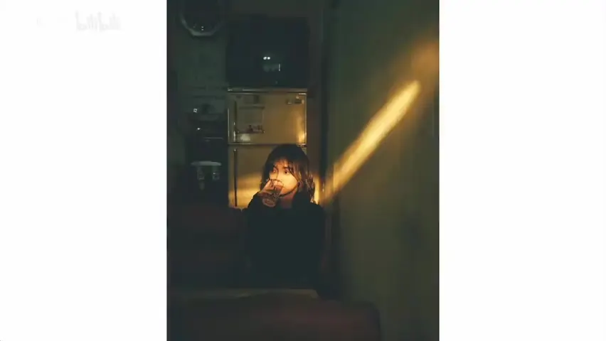 参考截图 01｜00:19 | 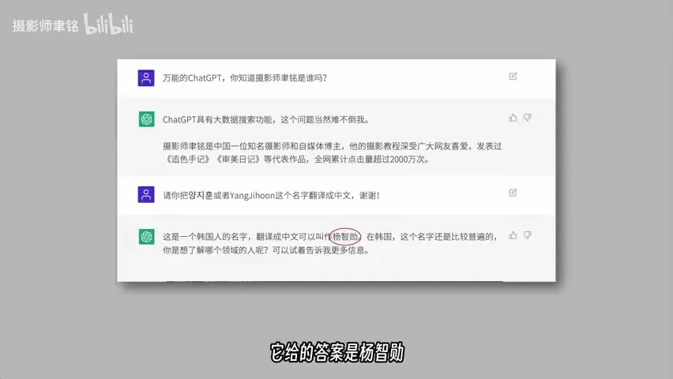 参考截图 02｜00:45 |
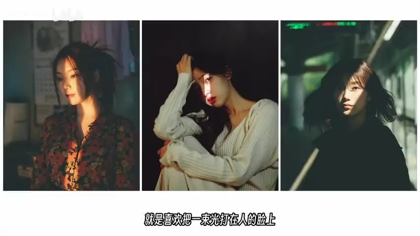 参考截图 03｜01:10 | 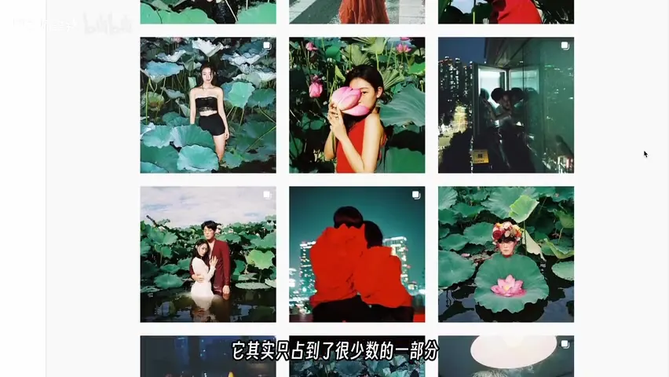 参考截图 04｜01:36 |
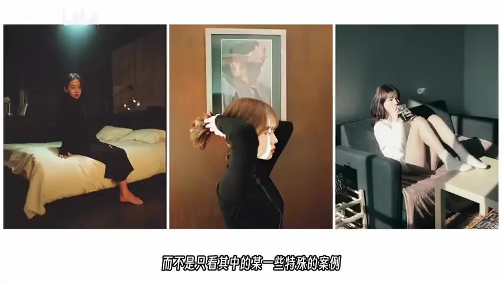 参考截图 05｜02:01 | 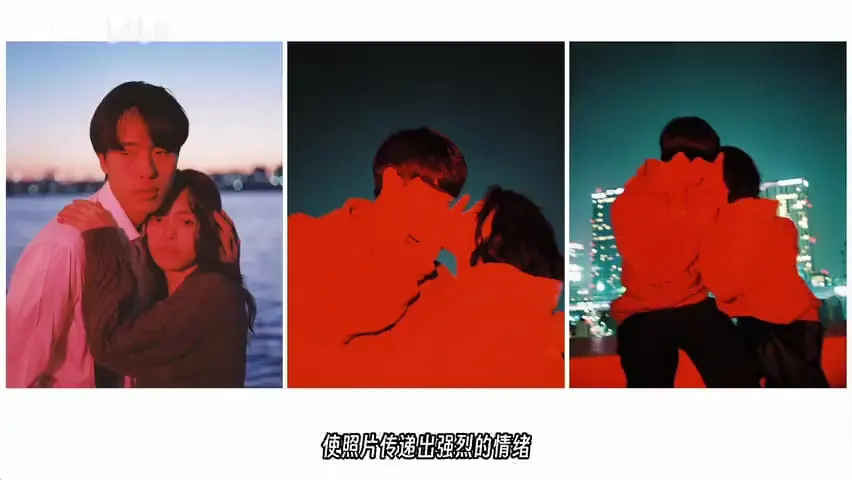 参考截图 06｜02:27 |
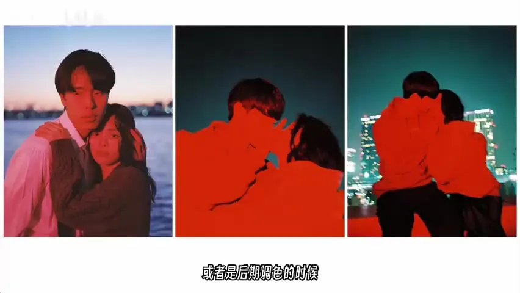 参考截图 07｜02:53 | 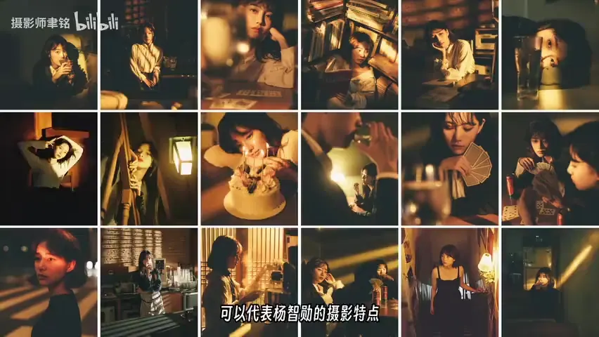 参考截图 08｜03:18 |
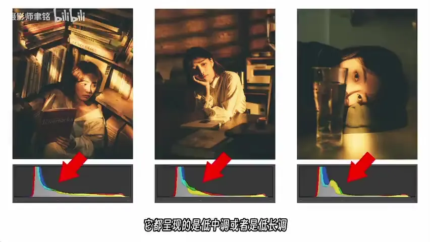 参考截图 09｜03:44 |
参考截图 10｜04:09 |
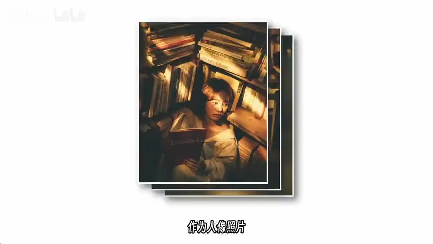 参考截图 11｜04:35 | 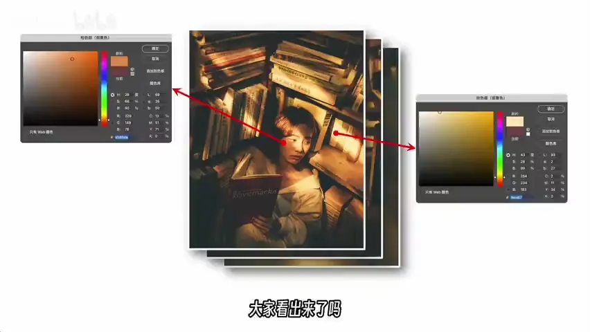 参考截图 12｜05:00 |
|
参考截图 13｜05:26 | 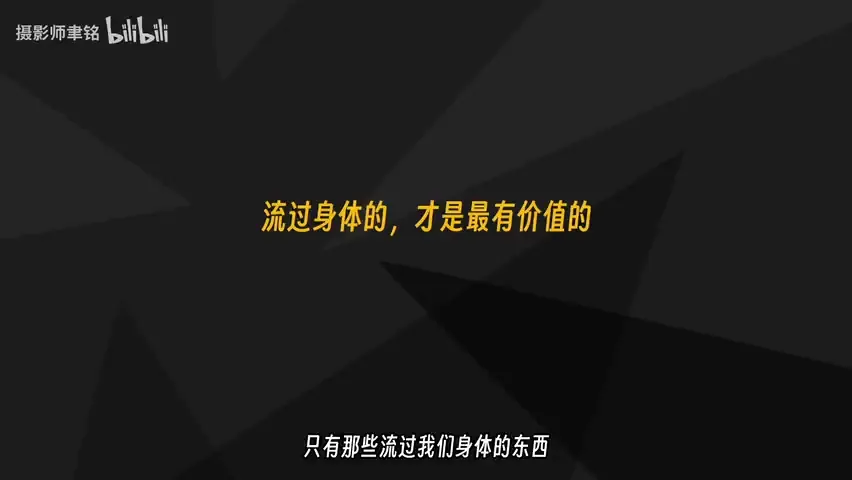 参考截图 14｜05:52 |
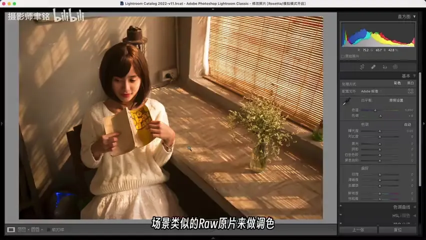 参考截图 15｜06:17 | 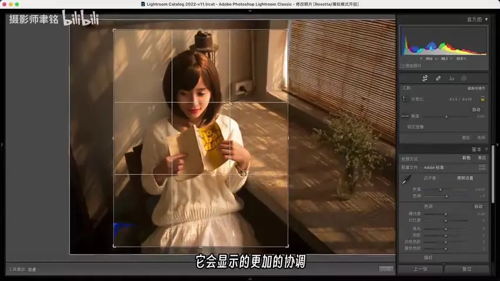 参考截图 16｜06:43 |
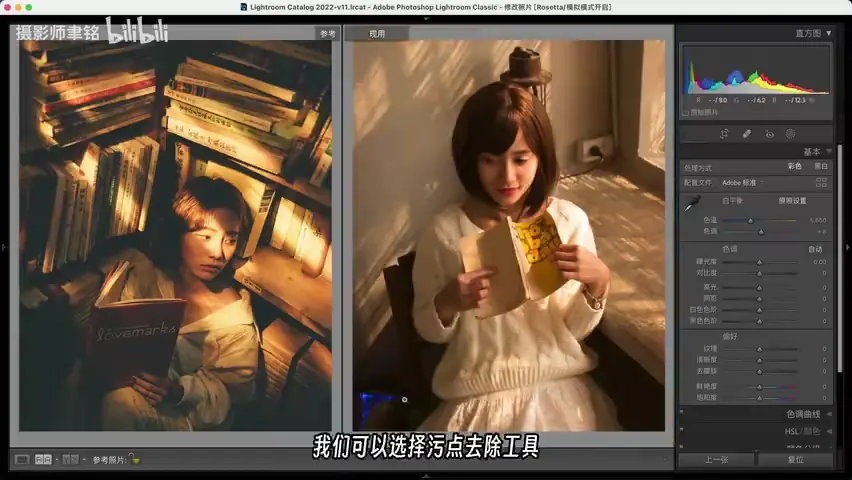 参考截图 17｜07:08 |
参考截图 18｜07:34 |
一页速览
风格目标 | 围绕“YangJihoon摄影风格调色”建立一套可复盘的观察和调色流程。 |
观察顺序 | 先看参考图与素材是否匹配，再看直方图和明暗关系，最后拆肤色、环境色、冷暖关系。 |
操作顺序 | 基础面板定亮度与反差，曲线塑造影调，HSL/混色器处理主色，颜色分级/校准统一氛围，局部工具收尾。 |
学习重点 | 不要只记参数；每一步都要对应画面问题，例如偏黄、过曝、肤色脏、暗部死黑、背景颜色杂乱等。 |
学习目标
能从参考截图中判断目标风格的题材、光线、影调和主色倾向。
能把视频里的滑块操作翻译成“解决什么画面问题”的思路。
能用基础面板、曲线、HSL、校准、颜色分级和局部调整完成一轮完整复盘。
能把同一套方法迁移到自己的照片，并根据素材差异微调而不是硬套数值。
能用前后对比、直方图和参考图同屏检查最终结果是否接近目标风格。
视频要点提炼
时间 | 类型 | 内容摘记 |
04:06 | 关键讲解 | 这种一亮一暗的光影对比 |
04:18 | 关键讲解 | 那么配合画面中的这种颗粒感 |
04:35 | 关键讲解 | 最关键的还是要看肤色 |
04:37 | 关键讲解 | 我们可以看到人的肤色是偏橙黄色的 |
04:41 | 关键讲解 | 并且他们的饱和度是偏高的 |
05:06 | 关键讲解 | 不是纯黑色 |
06:39 | 关键讲解 | 一边去对比一边去调色 |
07:50 | 关键讲解 | 照片的对比度现在看起来有点偏高了 |
07:53 | 关键讲解 | 我们可以适当的去降低一些对比度 |
08:14 | 关键讲解 | 我们试着把高光降低一些 |
08:16 | 关键讲解 | 找回一点点这种高光的细节 |
08:19 | 关键讲解 | 阴影可以稍微的提亮 |
Lightroom 复盘流程
参考图观察：先截取作品参考、原图与成片对比，判断画面属于清新、胶片、电影感、夜景、街拍、人像或风光中的哪一种。
基础面板：调整曝光、对比、高光、阴影、白色和黑色，让素材进入可调状态；这一步解决明暗和层次，不急着追求最终颜色。
曲线塑形：用曲线控制黑白端、中间调和整体反差；胶片感通常会抬黑或压白，电影感常强调暗部和高光的关系。
颜色控制：用 HSL/混色器拆解肤色、天空、绿植、衣服和背景；重点只动影响画面的主色，不把所有颜色都调一遍。
统一氛围：用校准、颜色分级、色温色调和少量局部工具统一冷暖关系，让画面不散、不脏、不互相打架。
局部收尾：处理脸部、天空、窗口、高光边缘、暗部噪点和主体突出度，最后和参考图同屏复查。
关键截图与讲解
图 01 | 00:57 | 关键画面
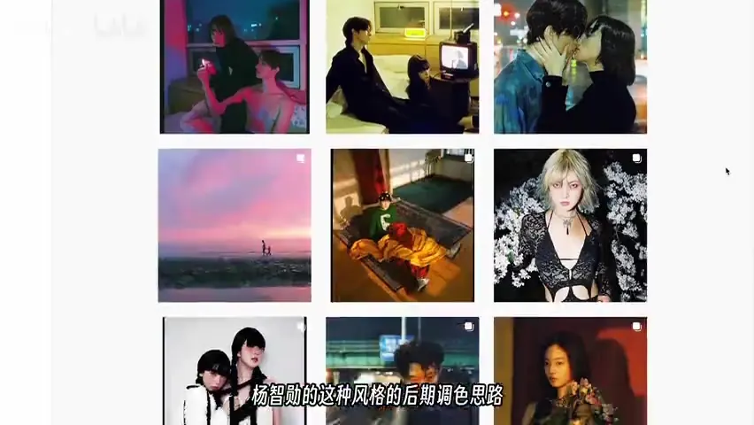
学习要点：哈喽大家好,我是摄影师运民
图 02 | 01:36 | 关键画面
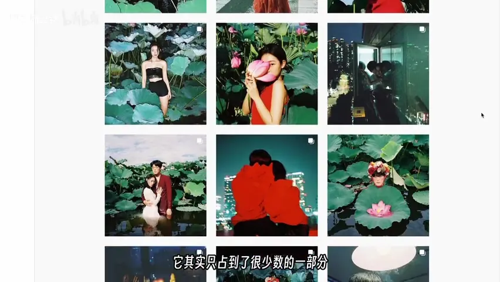
学习要点：哈喽大家好,我是摄影师运民
图 03 | 02:15 | 关键画面
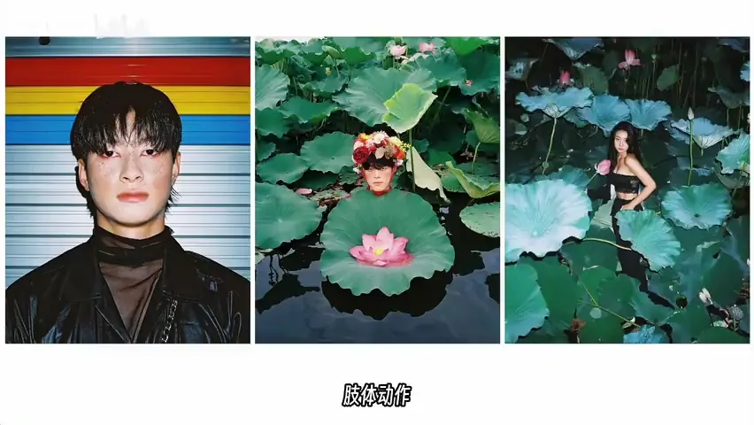
学习要点：哈喽大家好,我是摄影师运民
图 04 | 02:54 | 关键画面
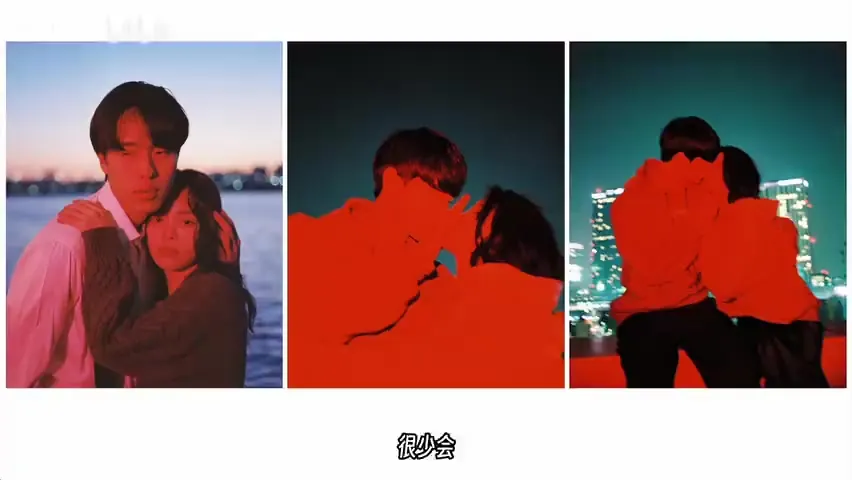
学习要点：哈喽大家好,我是摄影师运民
图 05 | 03:34 | 关键画面
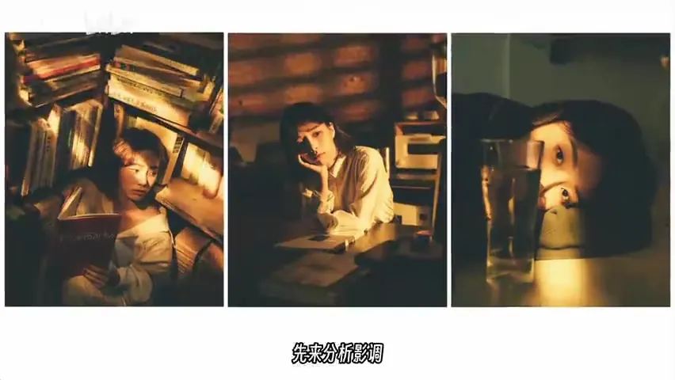
学习要点：哈喽大家好,我是摄影师运民
图 06 | 04:13 | 关键画面
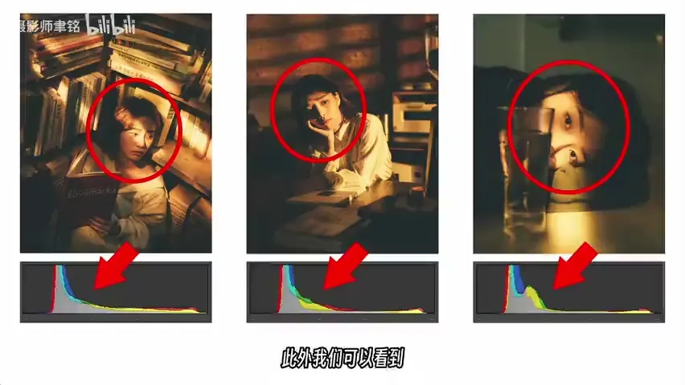
学习要点：哈喽大家好,我是摄影师运民
图 07 | 04:52 | 关键画面
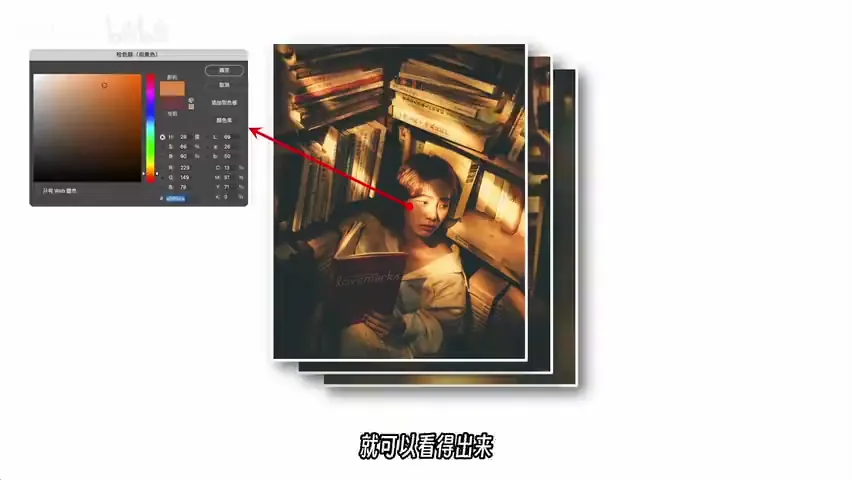
学习要点：哈喽大家好,我是摄影师运民
图 08 | 05:31 | 关键画面
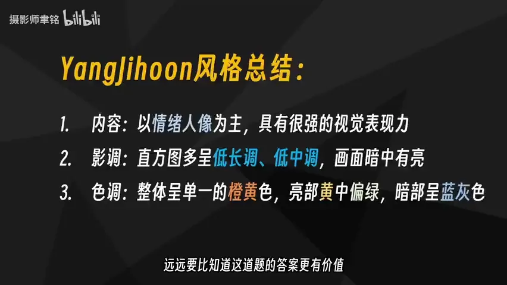
学习要点：哈喽大家好,我是摄影师运民
图 09 | 06:10 | 关键画面
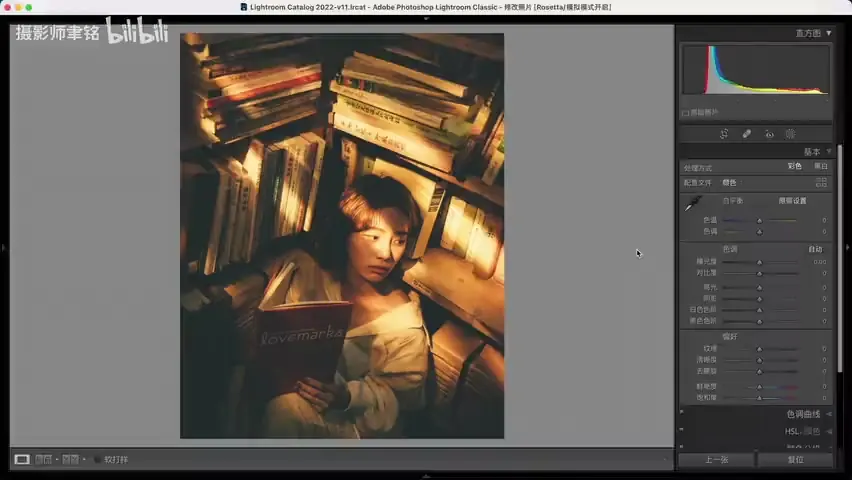
学习要点：哈喽大家好,我是摄影师运民
图 10 | 06:49 | 关键画面
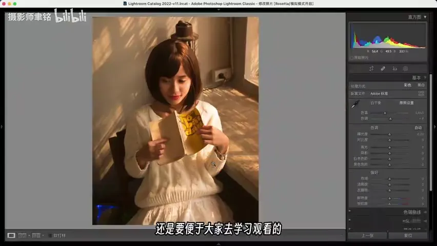
学习要点：哈喽大家好,我是摄影师运民
图 11 | 07:29 | 关键画面
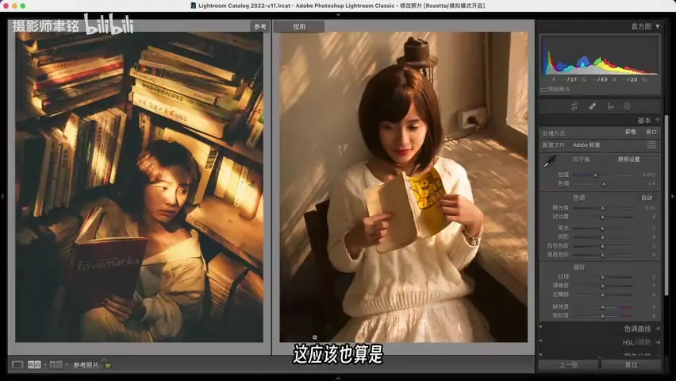
学习要点：哈喽大家好,我是摄影师运民
图 12 | 08:08 | 关键画面
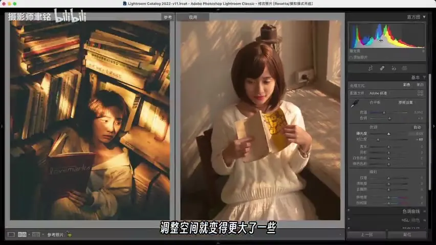
学习要点：哈喽大家好,我是摄影师运民
图 13 | 08:47 | 关键画面
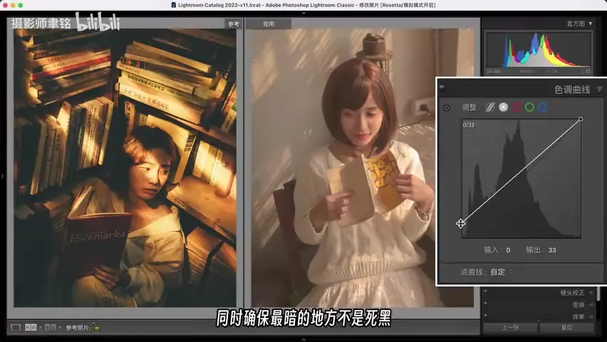
学习要点：哈喽大家好,我是摄影师运民
图 14 | 09:26 | 关键画面
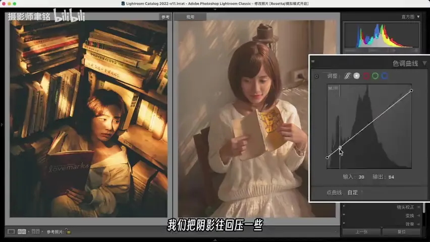
学习要点：哈喽大家好,我是摄影师运民
图 15 | 10:05 | 关键画面
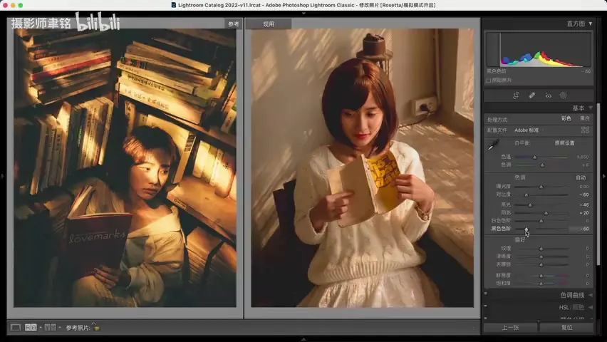
学习要点：哈喽大家好,我是摄影师运民
图 16 | 10:45 | 关键画面
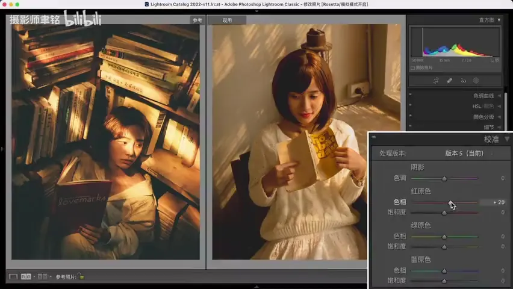
学习要点：哈喽大家好,我是摄影师运民
图 17 | 11:24 | 关键画面
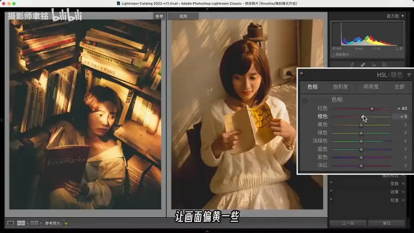
学习要点：哈喽大家好,我是摄影师运民
图 18 | 12:03 | 关键画面
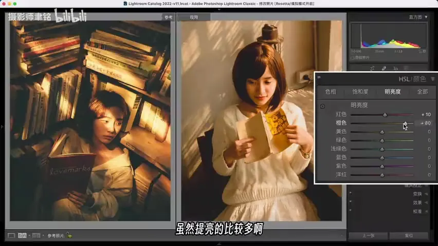
学习要点：哈喽大家好,我是摄影师运民
图 19 | 12:42 | 关键画面
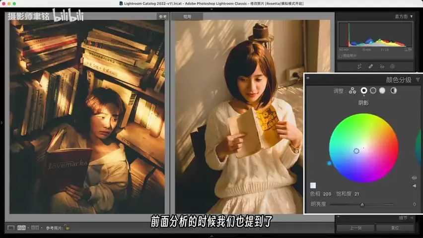
学习要点：哈喽大家好,我是摄影师运民
图 20 | 13:21 | 关键画面
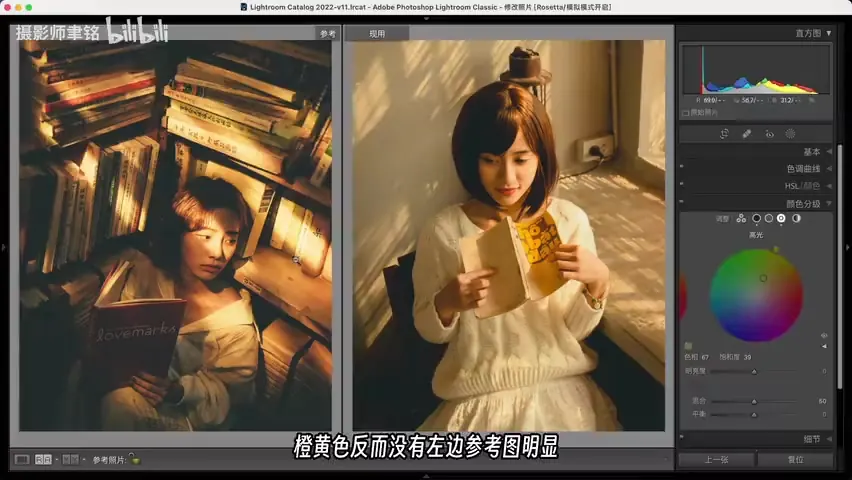
学习要点：哈喽大家好,我是摄影师运民
图 21 | 14:01 | 关键画面
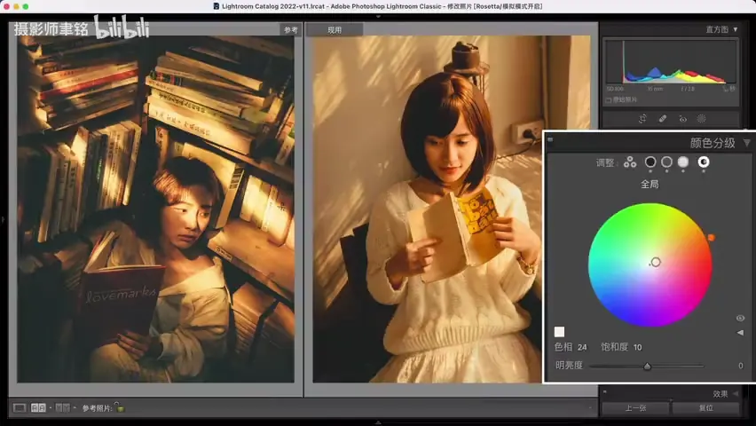
学习要点：哈喽大家好,我是摄影师运民
图 22 | 14:40 | 关键画面
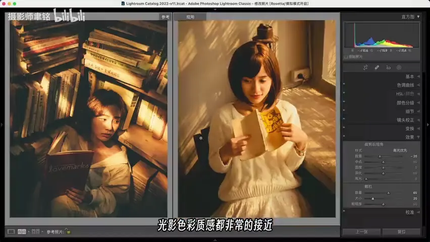
学习要点：哈喽大家好,我是摄影师运民
练习任务
找一张和《追色手记06》题材接近的照片，先写下目标风格的三个关键词。
截取 3-5 张参考图，同屏观察肤色、暗部、高光和背景色，不先动参数。
只用基础面板完成第一版，确认曝光、高光、阴影和黑白场没有明显问题。
用曲线建立主要影调，再用 HSL/混色器处理最重要的 2-3 个颜色。
完成后把原图、成片、参考图并排检查，记录最有效的三个操作。
复盘清单
检查项 | 通过标准 |
参考匹配 | 题材、光线和拍摄场景与参考风格足够接近。 |
影调 | 暗部、高光、中间调关系明确，不是单纯拉亮或压暗。 |
肤色 | 肤色符合风格方向，同时不发脏、不偏灰、不失真。 |
环境色 | 背景颜色统一，主色明确，杂色被压住。 |
质感 | 清晰度、纹理、降噪、颗粒和暗角符合目标气质。 |
迁移 | 换一张同组照片后，只需微调曝光和局部即可成立。 |
时间轴速查
时间 | 模块 | 重点 |
00:00-01:58 | 模块 1 | 哈喽大家好,我是摄影师运民；欢迎和我一起用摄影开启新的世界；首先请教大家一个问题 |
01:58-03:56 | 模块 2 | 而不是只看其中的某一些特殊的案例；除此之外；杨志勋的部分作品 |
03:56-05:55 | 模块 3 | 打在人的脸上的；但并不一定是前面提到的那种；细细的一束光 |
05:55-07:53 | 模块 4 | 听懂了这部分思路的同学；请打一个懂了；我看看还有多少人在认真地听 |
07:53-09:51 | 模块 5 | 让照片先偏灰一些；这个时候呢；大家注意看这方图 |
09:51-11:50 | 模块 6 | 只要把黑色色阶降低一些；这样就可以很好的去改上；画面偏灰的问题了 |
11:50-13:48 | 模块 7 | 明亮度；红色的嘴唇稍微再提亮一些；橙色主要影响的是肤色 |
13:48-15:46 | 模块 8 | 给画面的整体都进行染色；给整体都进行染色；我们适当的去给一点点橙黄色进去 |
全部图片
本页共保留 40 张来自 Word 的图片。上方正文中已按文档顺序展示，这里作为总览索引。